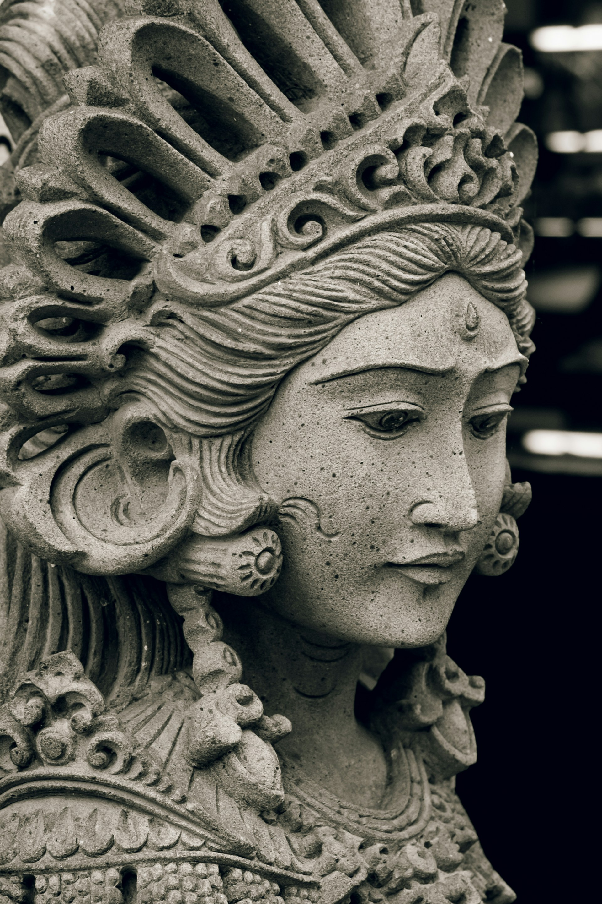
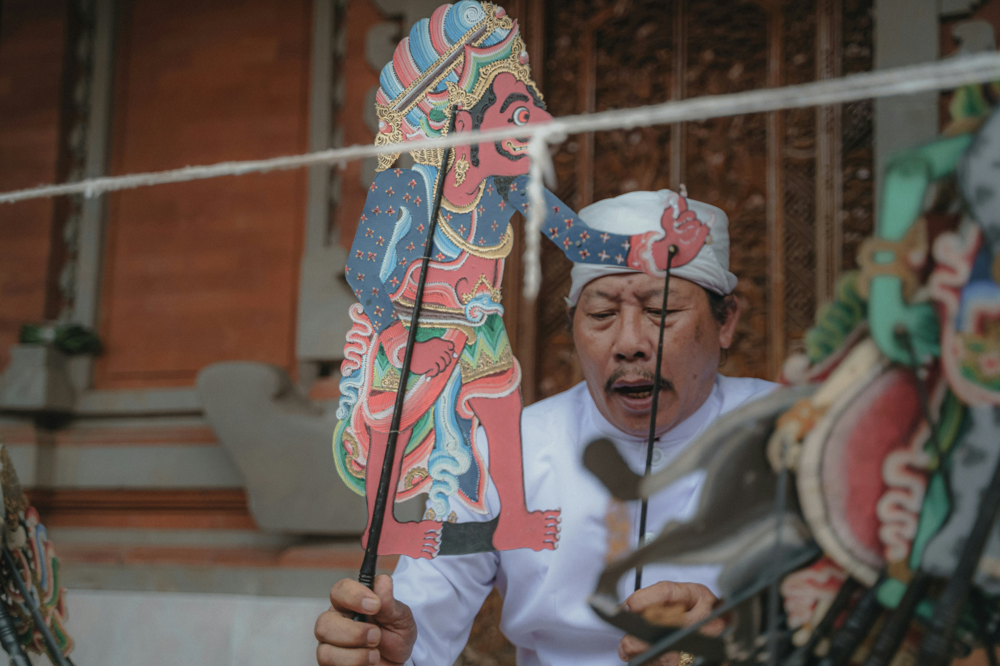
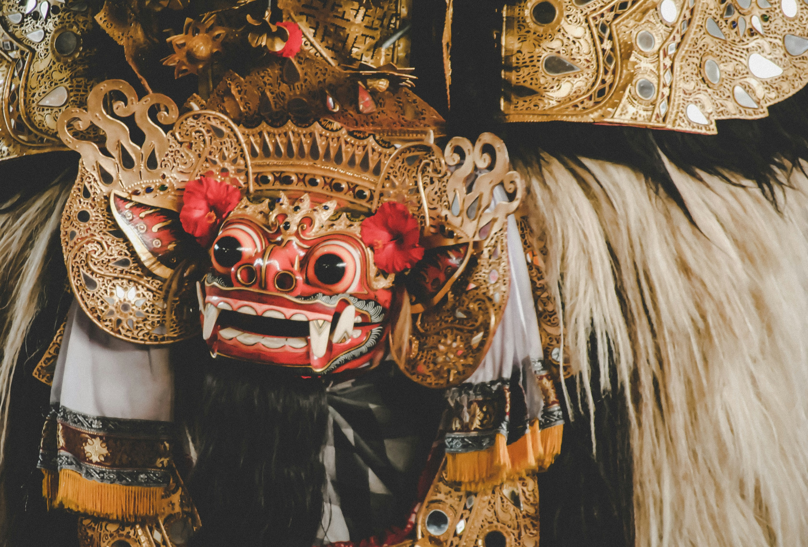
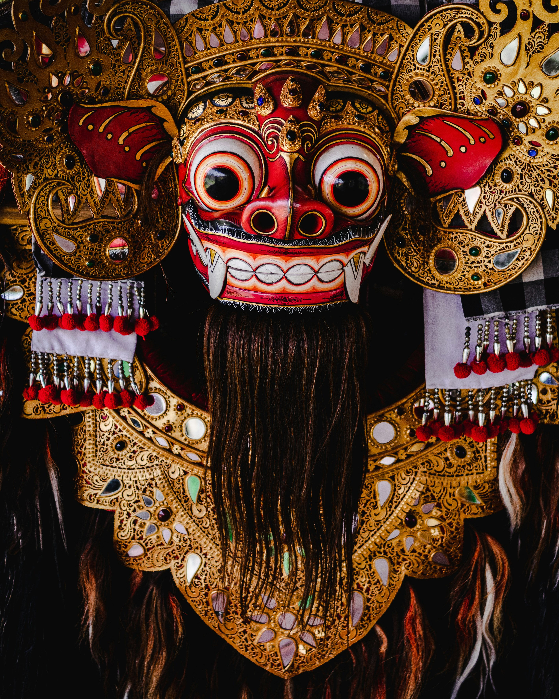
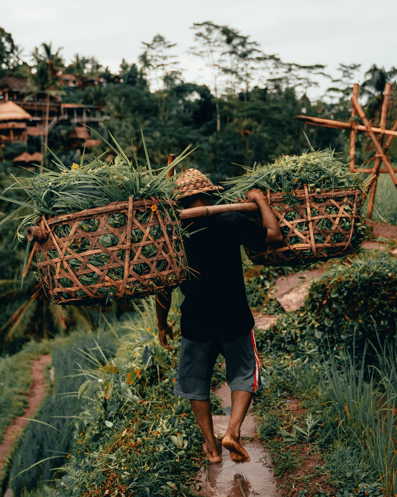

Chaque aventure est une expérience complète, soigneusement pensée pour répondre à tous vos besoins pendant votre séjour à Bali
découvrez nos parcours
Plongez dans les merveilles de Bali avec nos trois parcours uniques, conçus pour vous offrir une immersion profonde dans la richesse spirituelle et culturelle de cette île.

Shiva
À la découverte de la culture locale
Durée : A partir de 15 jours
Plongez au cœur de la culture balinaise avec
notre parcours Shiva, une expérience
envoûtante de 15 à 25 jours à travers les
paysages et traditions de Bali. Explorez les
destinations d'Ubudt Sidemen, Pemuteran,
Lovina, Amed, Candidasa et Nusa
Lembongan, mêlant découvertes culturelles,
activités enrichissantes et moments de
méditation profonde.

Hanuman
Une exploration sportive de l'île de Bali
Durée : A partir de 15 jours
Partez à l'aventure avec notre parcours
Hanuman, une expérience palpitante de 15 à
25 jours à travers les paysages et les
activités sportives de Bali. Explorez Canggu,
Munduk, Amed, Nusa Lembongan, Sanur,
Uluwatu, Jimbaran et Seminyak pour une
retraite dynamique et revitalisante.

Ganesh
Sérénité et méditation
Durée : A partir de 15 jours
Profitez de la tranquillité à Bali avec notre
parcours Ganesh, une retraite de 15 à 25
jours, alliant méditation guidée, randonnées
spirituelles et exploration des lieux sacrés.
Rejoignez-nous pour une aventure
transformative nourrissant votre esprit et
votre âme.
QU'EST-CE QUI EST INCLUS DANS MON AVENTURE ?
Temps de méditation
Yoga
Visites de temples
Hébergements luxueux
Guides locaux experts
Transports sécurisés entre les activités
rejoignez la communauté

Suite à votre réservation, vous aurez accès à la grande communauté Dewa pour poser toutes vos questions et échanger avec les autres voyageurs.








témoignages de nos voyageurs

Paul M.
parcours hunaman
Des séances de surf à Canggu aux randonnées paisibles à Uluwatu, chaque moment était une exploration de soi et de la nature. Merci à Dewa pour cette aventure inoubliable !

Justine A.
parcours shiva
Chaque journée était remplie de découvertes fascinantes, des marchés animés d'IJbud aux villages traditionnels de Sidemen. Merci à toute l'équipe pour cette aventure.

Lily V.
parcours ganesh
Des séances de yoga méditatives à Munduk aux moments de contemplation à Nusa Penida, chaque étape m'a permis de me reconnecter avec moi-même.